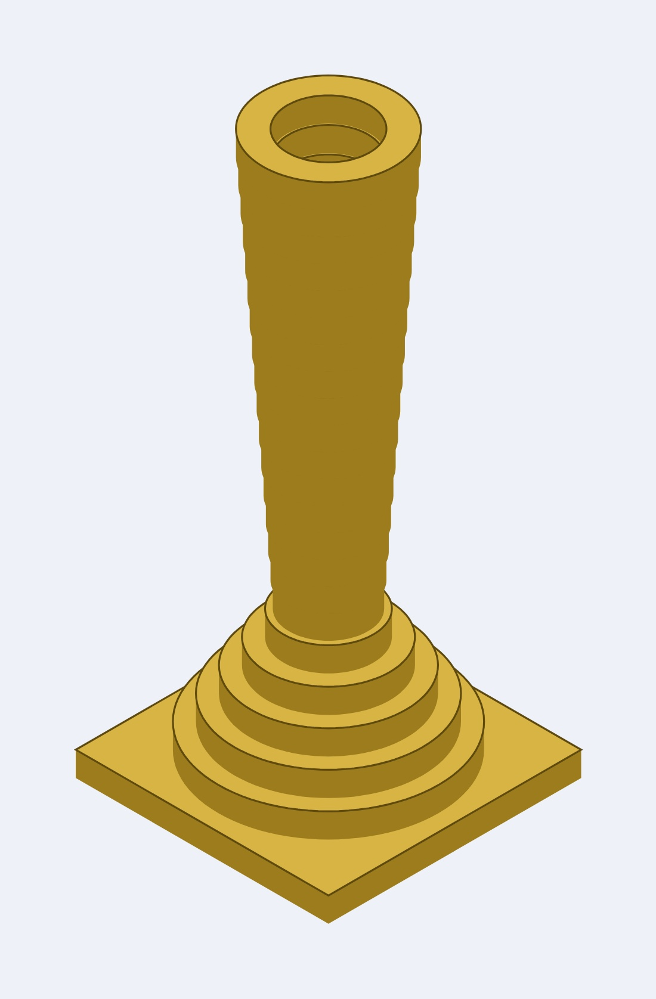
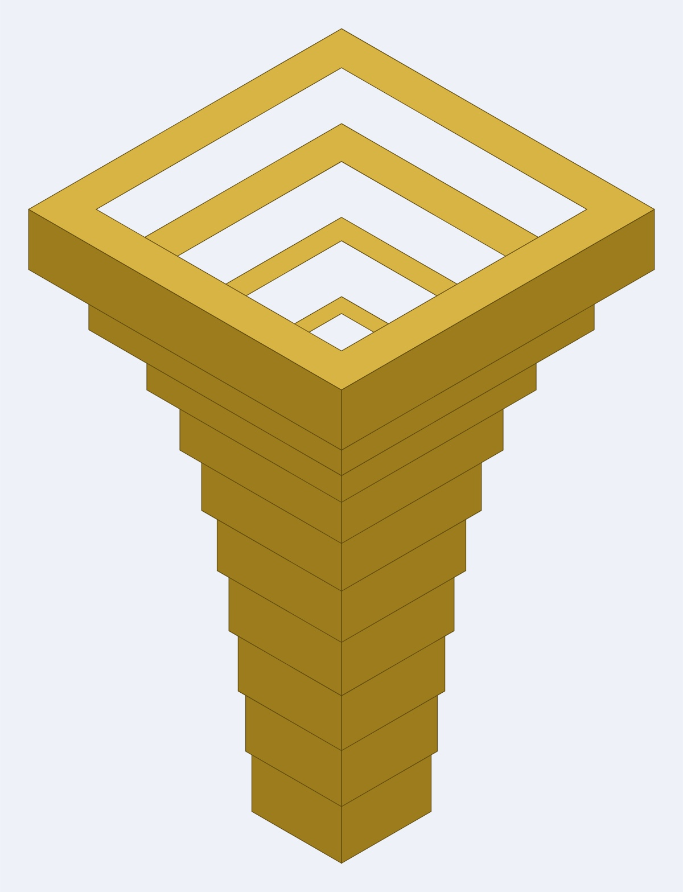
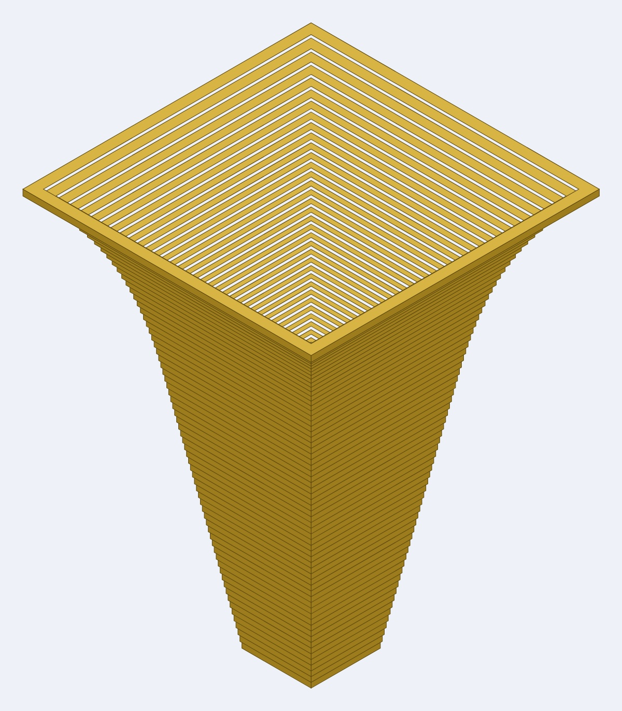

Trumpet parts
The bell and the mouthpiece: the generators that draw them, and the sheets that more than one trumpet cuts. Both are built on the same 25 × 25mm channel — 31mm outside in 3mm Baltic birch plywood — so either fits any bore cut to it:
- Coiled trumpet — a bore that coils flat and drops twice, with no elbows.
- Octagonal trumpet — a curved octagonal bore, the trumpet form of the octagonal torus.
A third, the switchback trumpet, keeps a whole instrument per folder and so keeps its own copies; it is made with these generators but cuts no sheet from here.
They live here rather than inside one instrument because neither is changed by the shape of the bore. A trumpet is a mouthpiece, a length of tube and a bell; only the tube differs.
Since 2026-08-31 there is a second channel, 25 × 25mm's little brother at 10 × 10mm, for the small version of the switchback trumpet. It is not a scaled copy of the 25mm parts — see The 10mm trumpet.
Millimetre-true at 1 user unit = 1mm, so everything prints and cuts at real size.
Built for LaserMadeMusic, where the cutting and the playing are shown.
The rest of the build files — every instrument, generator and tool, indexed.
What fits what
The bore is cylindrical — constant section end to end — and the only part of a trumpet that flares is the bell. That is why these two parts are interchangeable across bores:
| dimension | mates with | |
|---|---|---|
| Bore, air channel | 25mm square | the bell's 25mm throat and the mouthpiece's 25mm station |
| Bore, end face | the 3mm ring between them | covered completely by the bell's flange and the mouthpiece's plate |
| Mouthpiece station one | 31mm square plate, 25mm square aperture | the end face of any bore section |
| 10mm bore, air channel | 10mm square | the 10mm bell's throat and the 10mm mouthpiece's station one |
| 10mm bore, station one | 16mm square plate, 10mm square aperture | the end face of a 16mm-block bore |
The wall is 3mm either way, so the plate is always the channel plus 6mm. That one line is the whole of what --bore changes.
The mouthpiece
Three of them, all 30 rings and 90mm stacked, differing in bore and in layout — how the 90mm is spent. The asbuilt layout gives a short steep backbore and a long near-cylindrical entrance; the trumpet layout spends 75mm on the backbore and keeps the cup short, as a real one does.
| sheet | bore | layout | rim |
|---|---|---|---|
mouthpiece-bore25-asbuilt-parts.svg | 25mm | asbuilt | ø16.5mm |
mouthpiece-bore25-trumpet-parts.svg | 25mm | trumpet | ø16.5mm |
mouthpiece-bore10-trumpet-parts.svg | 10mm | trumpet | ø17mm |
{kind=link}
{kind=link}
{kind=link}
Both parameters are in every name, because the two 25mm sheets are different parts and until 2026-09-02 nothing in either filename or either <title> said so.
mouthpiece/mouthpiece-bore25-asbuilt-parts.svg — the whole mouthpiece in one sheet: square where it meets the bore, round by the throat, and a cup at the lip. Station one is a sharp 25mm square aperture in a sharp 31mm square plate, matching the bore corner for corner; the corners round away going up and the section is a true circle from the ø7.5mm station on, 21mm from the joint. Three runs, from the bore:
| Rings | Airway | |
|---|---|---|
| Backbore | 9 | 25 -> 5mm in 2.5mm steps, square becoming round |
| Entrance | 17 | the 3.66mm throat (a #27 drill), then 0.40mm a ring out to 10.06 |
| Bowl | 4 | 10.06 -> 16.5mm over 12mm — the cup, ending at the rim |
These rings stack; they do not telescope. The wall is 3.00mm at every one of the 30 stations, the throat included, so what varies is the shared face: 2.80mm per side through the cup and 1.00mm at the tightest backbore joint. No ring can drop through the one below, at the corners any more than across the flats. The bell inverts it — a fixed 3mm lap and a wall that varies with the flare.
The backbore steps 2.5mm, not 4mm, and that is what makes the square end possible. A ring's outer is its aperture offset by the wall, so the seat the next ring lands on is the wall minus how far the two apertures differ in that direction. Across the flats that is half the aperture step, and the old 4mm steps left 3.00 − 2.00 = 1.00mm. Through the corners of a sharp square the same step costs 2.83mm, leaving 0.17mm — and rounding a corner pulls the diagonal in further still, which takes it negative. A square mouthpiece cannot be built on a 4mm taper at all. At 2.5mm the corner seat is 1.23mm with room to round. It is the same 25 -> 5mm cone either way, sampled finer: three more rings, 9mm more mouthpiece, and no change to the profile the air sees.
Roundness is not scheduled. Each station takes the largest corner radius that still leaves 1.00mm of seat in both directions, so the part rounds as fast as its own geometry permits and no faster.
A real mouthpiece: --layout=trumpet
The same 30 rings and the same 90mm, with the length where a trumpet actually puts it. The sheet is no longer kept here — the only instrument cutting it is the switchback trumpet, so it lives in trumpet-switchback under 25mm/mouthpiece/. Write a fresh one by naming the output path: python3 mouthpiece-round.py --layout=trumpet mouthpiece-trumpet-parts.svg.
| Backbore | Entrance | Cup | |
|---|---|---|---|
--layout=asbuilt (default) | 27mm | 51mm | 12mm |
--layout=trumpet | 75mm | — | 12mm |
A real mouthpiece opens its throat into the cup almost at once and spends its length on the backbore. The default has that close to inverted: a short steep backbore, and 51mm of near-cylindrical run on the lip side of the throat, which is a 48mm-deep cup by any honest reading. It stays the default only because a mouthpiece exists to that profile and its rings are numbered for it. Cut --layout=trumpet for a new one.
--backbore sets its length in rings and --power how it opens — 1 is a straight cone, higher keeps it near-cylindrical off the throat and opens it later, as a real one does.
The wall is no longer a constant, and it cannot be. A ring's outer is its aperture plus two walls, so the seat above it is the wall of whichever ring is narrow there, less half the aperture step. A real cup turns far too fast for 3mm: straight off the throat it runs ø3.66 to ø11.25 in a single ring, wanting 4.80mm of wall to have anything to sit on. Each ring now takes the wall its own step demands — 3mm nearly everywhere, 4.80mm on the throat ring, and nowhere else. Held at 3mm the cup would have had to be 36mm deep, which is not a cup.
Retrofitting a cup onto one already glued
mouthpiece-cup.py writes the bowl on its own — 4 rings, ø10.06 to a ø16.5mm rim. No sheet is kept for it, because it rescues one particular mistake rather than being a part anyone sets out to cut; run the script when you need it. The sheet above used to stop at ø10.06 opening 0.40mm a ring, which is a 3.8° half-angle: a tube, not a bowl. A trumpet rim is 16 to 17mm across inside, so the cup was not shallow, it was absent. These rings stack on top of a mouthpiece already glued without one — they replace nothing and nothing below needs recutting.
A sheet from mouthpiece-round.py is that part plus these four rings, ring for ring, so both routes number identically: 0 to 19, then 1A to 1d. Cut one sheet for a new mouthpiece; cut this one to rescue a mouthpiece already built.
A cup is a bowl, not a cone, and the difference is where the wall stands up. The profile is an ellipse arc through the depth-radius plane whose slope is zero at the rim, so the wall runs parallel to the axis where your lip sits and turns toward the throat going down. The first ring opens 3.21mm — a 28° half-angle — and the rim ring only 0.33mm. A cone would meet the rim at an angle and feel like a funnel.
They are numbered 1A to 1d, continuing the stack rather than restarting, and every joint is checked including the one landing on glued work: 1.40mm of seat at the tightest. --rim and --rings move the rim diameter and the depth.
The bowl is a staircase of 3mm ply. Sand or fill the steps and round the rim over before playing it — as cut, the rim edge is a square corner and your lip will say so.
Its rings carry engraved hex numbers too, 0 on the bore plate through 19 on the lip. They matter more here than on the bell: the sixteen cup rings differ by 0.40mm and are indistinguishable by eye. The numbering runs in assembly order, not by size — the airway narrows to the throat and opens again, so the backbore and the cup pass through the same diameters and sorting by size would shuffle one into the other. number_rings.py refuses to guess on a profile that doubles back; --order=document numbers them as the file lists them, which is assembly order. b and d are lower case because on seven segments an upper-case B is the same shape as 8 and an upper-case D the same shape as 0.

mouthpiece-bore25-asbuilt-parts-section.svg is the axial section of the part above, drawn by bell-section.py. It is a display drawing, not a cut file.
The previous mouthpiece is still here. mouthpiece.py generates it — 23 rings, 69mm, a 4mm backbore taper, and a 25mm round aperture in the square plate, so the joint threw away the bore's corners and 21% of the airway stepped out of the channel at station one. mouthpiece-section.svg and the view above are drawings of that design. mouthpiece-view.py draws it and only it: it takes every ring for a circle apart from a hardcoded square plate with a round bore, so pointing it at the square-to-round part would produce a confident picture of the wrong object.
A note on its variable names. mouthpiece.py calls the 25 -> 5mm run cup and the 3.66 -> 10.06mm run backbore, which is the reverse of the anatomy: the cup is at the lip and the backbore opens into the instrument. The numbers are right and the parts are right; the names inside the script are not, and the <desc> it writes into the SVG repeats them.
The bell
Four bells. The rings telescope: each ring's aperture is the one below it plus the radius gained, lapped by a fixed 3mm for glue, so the bore widens at every joint and the wall varies with the flare.
Ring 0 is a flange, not a ring. The bore ends in a square annulus of ply 3mm wide — 25mm inside, 31mm out — and the flange is a sharp 37mm square with a 25mm square hole, so it covers that whole face and stands 3mm proud of it. It is the only ring whose outside is not set by the profile, and it is wider than the several rings above it.
The throat is 25mm square, the bore's air channel, so the airway runs straight through the joint. It used to be 31mm — the bore's outside — which put a 3mm shoulder per side in the airway and left the first ring sitting entirely outside the bore's footprint with nothing to glue to but the tube wall.
| File | Rings | Build | Pieces | Rim diameter | Angle, throat → steepest | Sheet, per pass |
|---|---|---|---|---|---|---|
bell-trumpet-201mm-10rings.svg | 10 | 7 ply | 70 | 129.0 | 2.4° -> 36.7° | 241 × 254mm |
bell-trumpet-201mm-14rings.svg | 14 | 5 ply | 70 | 129.0 | 2.4° -> 41.4° | 283 × 314mm |
bell-trumpet-201mm-17rings.svg | 17 | 4 ply | 68 | 129.0 | 2.3° -> 46.6° | 348 × 314mm |
bell-trumpet-201mm-67rings.svg | 67 | 1 ply | 67 | 129.0 | 2.3° -> 59.3° | 767 × 534mm |
Each file draws every ring once — cut it as many times as the Build column says. The 10-ring bell is 7 laminations a ring: 7 passes, 70 pieces, glued into ten 21mm bands. Cut it once and you get a 30mm bell instead of a 210mm one. Only the 67-ring file is one pass.
All four now reach the same 129.0mm rim, because with a 3mm lap the old 2mm minimum-wall floor never binds and the profile follows the Bessel curve exactly rather than being inflated by it. They come to 67–70 pieces, so a coarse bell is not less cutting, and they are within a hair of each other on material: 0.43 m² of 3mm ply for the 10-ring, 0.44 for the 14- and 17-ring, 0.41 for the 67-ring.
Nesting is where the real saving is, and it is hand work. The 17-ring sheet was once nested by hand into 347 × 133mm — 0.18 m² — against the 348 × 314mm the generator lays out. The generator drops each ring in a grid and never puts a small ring inside a big one's aperture, so most of every sheet is the hole in the middle of a ring. That is a quarter of a square metre of ply an afternoon in Inkscape buys you.




10, 14, 17 and 67 rings — the same Bessel profile sampled at four resolutions.
The four files follow a Bessel profile, gamma about 0.7 — the standard model for a trumpet bell — opening from the bore's 25mm channel. The ply is 3mm so a ring rises 3mm; fewer rings means each ring is several identical laminations glued into a single band.
They are not four samplings of one fixed length. A whole number of rings at each rise lands somewhere slightly different, so the four come out 210, 210, 204 and 201mm long, and the 67-ring reaches a wider rim than the other three.
Where a bell overshoots the 201mm profile its rim ring flares less than the ring below. That ring is still a full lamination stack tall — it is plies pieces of 3mm ply like every other — and simply has less curve left to draw. It shows on the 14-ring, whose steepest ring is 36.8° and whose rim ring is 24.6°; the angle above is the steepest, which is why that column and the last number bell.py prints are not always the same ring.
Coarser is gentler at the throat and steeper at the rim: 2.4° against 2.3° where the horn is nearly cylindrical, 36.7° against 59.3° at the rim, because a coarse ring averages across a stretch of curve the fine one resolves. The 17-ring is the balance, and its sheet fits a 400mm bed at 348mm even unnested. bell.py generates all four. bell-section.py draws the axial sections — bell-trumpet-201mm-10rings-section.svg, bell-trumpet-201mm-14rings-section.svg, bell-trumpet-201mm-17rings-section.svg and bell-trumpet-201mm-67rings-section.svg — bell-view.py the assembled views, ramp_bell.py applies the cut-order colour, and verify_bell.py checks an edited sheet.
The square-to-round bell
The four above are square end to end. bell-round.py is the alternative: the same Bessel profile, the same 3mm ply and the same 3mm lap, but the section morphs from the bore's square to a round rim. Ring 0 is the same 37mm square flange with a 25mm square hole that covers the bore's end face; the corners are rounded away up the horn until the rim is a true circle.
| File | Rings | Build | Pieces | Rim diameter | Sheet, per pass |
|---|---|---|---|---|---|
bell-round-bore25-201mm-10rings.svg | 10 | 7 ply | 70 | ø144.8 | 262 × 276mm |
bell-round-bore25-201mm-14rings.svg | 14 | 5 ply | 70 | ø144.8 | 302 × 340mm |
| 17 rings | 17 | 4 ply | 68 | ø144.8 | 371 × 340mm |
bell-round-bore25-201mm-67rings.svg | 67 | 1 ply | 67 | ø144.8 | 674 × 675mm |
The 17-ring sheet is not kept here. It is the one the switchback trumpet cuts, so it lives in that repository under 25mm/bell/ with the rest of that instrument. bell-round.py still writes it — and a bare run writes it here, where it does not belong; pass a ring budget, or delete what lands.
Every ring is a rounded square — a square of half-width h with its corners rounded to radius c. At c = 0 that is exactly the square that meets the bore; at c = h it is exactly a circle. Nothing is approximated at either end of the morph.
These rings stack; they do not telescope, and that is what fixes the seat. Each ring's outer contour is the next ring's aperture offset outward by 3mm, and offsetting a rounded square by d gives another rounded square — half-width h+d, corner radius c+d — so the gap between the two is exactly d in every direction, corners included. Every joint seats on 3mm per side however square or however round the two rings happen to be, and the flange joint on more. That lap was 1.5mm and the joints opened up: it is the width of the glue land, and 1.5mm leaves nothing for kerf or for a ring set down a hair off centre.
Area, not width, is held to the profile. A circle inscribed in a square has 21% less area, so rounding the corners at constant width would choke the horn at the very place it should be opening. Each station is widened instead to enclose the area the square bell would have had — by nothing at the throat, by 12.8% at the round rim. That is why the rim comes to ø144.8mm where the square 17-ring bell's is 129.0mm square. --law=width turns that off and follows the half-width instead.
--morph sets the schedule: linear rounds evenly along the length, flare tracks the radius gained so the section stays squarer through the long slow throat and turns over the last third, early is circular by mid-horn. Nothing about the joint changes between them.
bell-section.py sections these through the flats as it does any bell. bell-view.py reads the corner radius out of the arcs the corners are drawn with, so the assembled view rounds where the part rounds; it used to draw every ring as a square, which was true of bell.py's four and of nothing else.
The generator checks the seat, the wall and the bore before it writes anything, because verify_bell.py will not: it reads an arc as proof it is looking at the mouthpiece and skips these sheets. Every sheet now fits a 400mm bed except the 67-ring, which is one pass of 674 × 675mm and always wanted a big machine.
A smaller bell
A bell cannot be scaled. A ring rises 3mm because the ply is 3mm, and that number is never ours to halve. The throat is 31mm because the bore is 31mm outside — true of every bell here until --bore arrived, and still the only way to move it: the throat follows a bore that really changed, it does not shrink to make a smaller bell. What is free is the profile, so a smaller bell is a shorter length with whatever rim you want at the end of it, and the flare between them steepens to suit.
Both generators take --length in mm, --rim the bore's diameter at the rim before the wall is added, and --gamma the Bessel exponent. bell-round.py also takes --mouth, which is --rim stated as the hole you actually want, and --bore.
bell-round-bore25-99mm-11rings.svg is one, kept in the repository. It comes from bell-round.py 11 --length=99 --rim=80: eleven rings of 3 ply, 99mm long, a 31mm square throat opening to a ø96.3 round rim, 33 pieces off a 248 × 202mm sheet at 0.15 m², walls 3.6 to 11.8mm. Half the length of the standard bell and under a third of its material, and 99mm divides evenly by its 9mm rise, so there is no flat collar at the rim.
Every bell here carries engraved hex numbers now, 0 on the smallest through to the rim — on this one, 0 through A. That was true of the mouthpieces from the start and of no bell until 2026-08-31, which is one way to lose a bell: rings glued in the wrong order is rings unglued, and consecutive rings differ by about two millimetres, nothing you can judge by eye once the parts are off the bed. number_rings.py puts the index inside each ring in engraving blue, sized to that ring's wall: 1.60mm on ring 0 where the wall is 2.29mm, up to a 4mm cap on the rim. The digits are seven-segment line strokes rather than text, so no font has to survive the trip into the laser software, and each one is grown to the largest size where every point of it still lands between that ring's aperture and its outer edge.
Bring the rim down with the length. Asking for a 99mm bell and leaving the rim at 123mm is legal but steep: the flare has half the distance to cover, so the wall runs to 21mm at the rim and the sheet grows rather than shrinks.
Pick a length the rings divide into. A whole number of rings rarely lands on the profile, and the leftover is a flat collar — the rim ring is a full lamination stack tall but draws only what curve was left. At 201mm that is cosmetic; at 100mm the same few millimetres can leave the rim ring nearly cylindrical. Both generators report the overshoot and name a length that would have divided evenly. 99mm is a good one: 33 × 3mm, 11 × 9mm or 3 × 33mm.
A non-default profile carries its length in the filename — bell-round-bore25-99mm-11rings.svg — so a short bell that happens to land on the same ring count can never overwrite one of the standard sheets.
The 10mm trumpet
The switchback trumpet is also cut at a 10mm bore on a 16mm block, and it needs its own bell and its own mouthpiece: a 25mm flange bolted to a 16mm tube covers nothing. Both generators therefore take --bore, which sets the air channel and the plate around it — the channel plus a 3mm wall each side — and nothing else. The ply is still 3mm and a ring still rises 3mm; that part genuinely cannot be scaled.
The 10mm sheets are not kept here. Nothing but that one instrument uses them, so they live in trumpet-switchback under 10mm/, alongside the bore they belong to. This repository keeps the generators and the 25mm sheets, which really are shared. The commands below are still how the 10mm parts are made; copy the result across.
bell.py and mouthpiece.py do not take --bore. Only the square-to-round pair does, because those are the two anything new is cut from.
The 10mm mouthpiece
python3 mouthpiece-round.py --bore=10 --rim=17 --layout=trumpet30 rings, 90mm stacked: a sharp 10mm square aperture in a 16mm square plate at station one, rounding to a true circle by station 3 — 6mm up, against 21mm on the 25mm mouthpiece, because a 10mm square has that much less corner to lose. Then a 26-ring, 75mm backbore down to the standard ø3.66 throat, and a four-ring bowl out to a ø17mm rim.
The throat does not follow the bore. ø3.66 is a #27 drill and a real trumpet throat; a mouthpiece is sized by the lip at one end and the drill at the other, not by the tube it feeds. --rim=17 is the inside of the rim, where the lip sits, and 16 to 17mm is where a trumpet lives — so this mouthpiece is full size on a quarter-size instrument, which is the point of it.
--layout=trumpet because this is a new part: it spends its length on the backbore and keeps a 12mm cup, which is how a real mouthpiece is proportioned. The asbuilt default is kept only for the one that has already been glued.
The 10mm bell
python3 bell-round.py --bore=10 --length=152 --mouth=80A 10mm square throat opening to ø80 of air over 152mm, flange ø10 in a ø22 square, covering the bore's 10–16 end face 3mm proud. Drop the ring budget and you get four lamination schedules of the same bell; the 17-ring is the one that was kept, 17 × 3 ply for a 153mm stack off a 187 × 192mm sheet in 3 passes. 152 divides by neither 3 nor 9, so every schedule overshoots a little — see A smaller bell; 153mm would have divided evenly by both.
--mouth is the hole, --rim is not
This is the trap the option exists to close. --rim is the square bell's width at the rim, which the area law then opens out by 2/√π once the section is a circle — so --rim=80 delivers a ø90.3 hole, not an 80mm one. --mouth=80 inverts that and gives you 80.
Beside it, the outer diameter is another 6mm larger again, because the rim ring carries the 3mm lap each side: this bell is ø80.0 of air inside a ø86.0 rim. The section line now prints both, and the README's "Rim diameter" column has always been the outer one.
Colour is the cut order
Blue engraves, then green -> orange -> cyan -> black, with black always the cut that frees the part and violet always skip. That sequence is shared by every LaserMadeMusic repository.
A nested sheet needs more than that. Where a small ring sits inside a big one's aperture, the small one has to be cut first or it is freed along with the waste it sits in, and one black stage cannot say so. ramp_bell.py answers that with a black → red ramp, one stage per ring by size, so the cut runs smallest first. None of the sheets here are nested today, so all of them cut in a single black stage with their numbers in blue. Give a ramped sheet an explicit operation per colour — a per-colour job silently skips any colour left unmapped.
Before you cut
Cut these in 3mm Baltic birch plywood. Ring thickness is ply thickness here: a bell ring rises 3mm because the sheet is 3mm, and the mouthpiece stacks 23 rings into 69mm the same way. Substituting 4mm stock does not scale the design, it breaks the profile.
Check an edited sheet with verify_bell.py rather than diffing path data — once paths have been through an editor and converted to curves, a byte diff says nothing.
Files
The bell, in bell/ — bell-trumpet-201mm-10rings.svg, bell-trumpet-201mm-14rings.svg, bell-trumpet-201mm-17rings.svg, bell-trumpet-201mm-67rings.svg, generated by bell.py. ramp_bell.py applies the cut-order colour, and verify_bell.py checks an edited sheet for ring sizes, the lap it states, nesting order and overlapping cuts. bell.py numbers each sheet as it writes it, calling number_rings.py — the hex index, smallest ring 0, in engraving blue, added without touching a single cut path.
Each number carries an orientation tick. A ring is a circle and has no top, so a number alone is ambiguous: turned over, a 3 reads as an E and a 6 reads as a 9. A short mark on the baseline, right of the last character, says which way up the label was engraved — the same convention as a seven-segment display's decimal point, or the underlined 6 and 9 on dice. Sheets cut before this was added do not carry it; --mark=no writes a label without one.
The square-to-round bell, in bell/ — bell-round-bore25-201mm-10rings.svg, bell-round-bore25-201mm-14rings.svg, bell-round-bore25-201mm-67rings.svg and the half-size bell-round-bore25-99mm-11rings.svg, generated by bell-round.py, which checks its own sheets rather than leaving it to verify_bell.py, and numbers their rings itself. The two 17-ring sheets — bell-round-bore25-201mm-17rings.svg and bell-round-bore10-152mm-17rings.svg — are what the switchback trumpet is built with, and the 25mm one fits the coiled and octagonal trumpets equally.
The mouthpieces, in mouthpiece/ — mouthpiece-bore25-asbuilt-parts.svg, mouthpiece-bore25-trumpet-parts.svg and mouthpiece-bore10-trumpet-parts.svg, generated by mouthpiece-round.py, which checks every joint in both directions before it writes, and engraves each ring's number itself by calling bell/number_rings.py --order=document as its last step. --numbers=no writes a bare sheet; a numbering failure deletes the sheet rather than leaving an unnumbered one to be cut. mouthpiece-cup.py writes, on demand, the cup that stacks on the end of one built before the bowl existed. Its rings continue the stack below rather than starting a new one, so they are numbered from --start, 23 by default — mouthpiece.py writes rings 0 to 22 and ends at the ø10.06 the cup lands on. Give it a different --onto and it asks for --start instead of assuming. Its predecessor is not kept as a sheet any more; mouthpiece.py still writes it on demand, and numbers it.
Display only, never cut — the axial sections bell-trumpet-201mm-10rings-section.svg, bell-trumpet-201mm-14rings-section.svg, bell-trumpet-201mm-17rings-section.svg, bell-trumpet-201mm-67rings-section.svg, bell-round-bore25-201mm-10rings-section.svg, bell-round-bore25-201mm-14rings-section.svg, bell-round-bore25-201mm-67rings-section.svg, bell-round-bore25-99mm-11rings-section.svg, bell-round-bore25-201mm-17rings-section.svg, bell-round-bore10-152mm-17rings-section.svg, mouthpiece-bore25-asbuilt-parts-section.svg, mouthpiece-bore25-trumpet-parts-section.svg, mouthpiece-bore10-trumpet-parts-section.svg, and mouthpiece-section.svg, drawn by bell-section.py; and the assembled views bell-trumpet-201mm-10rings-view.jpg, bell-trumpet-201mm-14rings-view.jpg, bell-trumpet-201mm-17rings-view.jpg, bell-trumpet-201mm-67rings-view.jpg and mouthpiece-view.jpg, from bell-view.py and mouthpiece-view.py.
Released under CC0 1.0.